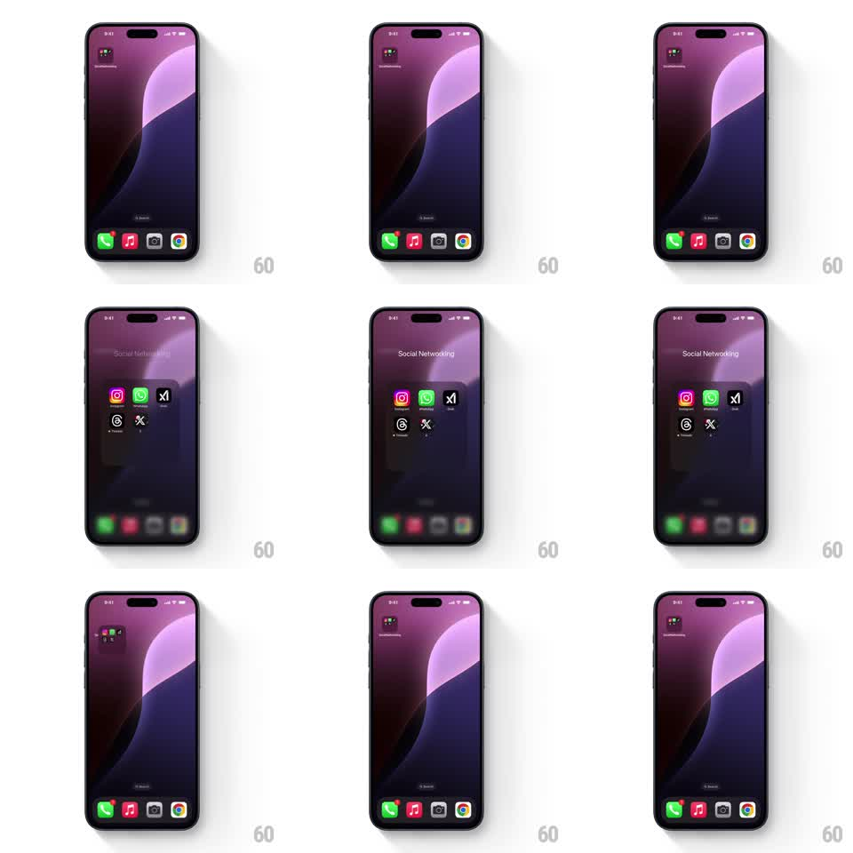

Media
Frame-by-frame

Rebuild this interaction 1:1: the iOS home screen folder - tapping a folder icon springs it open into a named grid of apps over a blurred home screen, and tapping outside springs it back shut.

Rebuild this interaction 1:1: the iOS home screen folder - tapping a folder icon springs it open into a named grid of apps over a blurred home screen, and tapping outside springs it back shut. ## Integration Integration: stack-agnostic spec - springs given as stiffness/damping, timed motions as duration + curve; map every value to your framework and animation library of choice. ## Scene iPhone home screen: wallpaper, a single folder icon top-left with a 2x2 mini-app preview, the dock at the bottom. Open state: the folder's name as a large header and its apps in a grid over a dimmed, blurred home screen. ## Motion spec Pattern: spring-expand container with background blur, ~500ms. - Tap the folder: it scales up from its icon position into the open container (spring stiffness 300 damping 25), its frame growing from the icon's bounds to the full folder card. - In the same beat, the home screen behind dims and blurs (300ms, ease-out) and the dock slides down slightly (200ms). - The folder's apps fade in to their grid slots with a 40ms stagger, row by row, each settling with a small overshoot. - The folder name fades in above the grid (250ms) last. - Tap outside or on the name: everything reverses - the apps stagger out, the card springs back into the icon's exact bounds, the blur and dim lift. ## Calibration - The container grows from the icon's position, not the screen center - the icon must visibly become the card. - The blur ramps with the expand, never fully on at frame one. ## Reduced motion Folder crossfades open over the dimmed screen; no position spring. ## Don't miss - The mini-app preview inside the closed icon crossfades into the real first row of apps. - The status bar stays sharp - only the wallpaper and icons behind the folder blur.